Path Tracing (path)
Scene File Inputs
- Lightsource: only support lights source from
.objwith emissive atribute in.mtlfile - Refractive Material: use illum between 3 and 8 with the index of refraction that is not one
- Mirror material: use illum between 3 and 8 with the index of refraction that is one
- Glossy material: material with illum other than 3-8 with non-zero specular coefficient
-
Diffusive Material: any material which is not any of the above and have non-zero diffusive coefficient
Parameter in the Program (pathTracer.h)
- m_sampling : [IMPORTANCE_SAMPLING | UNIFORM_SAMPLING | MULTIPLE_IMPORTANCE_SAMPLING]
- m_lighting : [INDIRECT_LIGHTING |DIRECT_LIGHTING | GLOBAL_LIGHTING]
- m_rayPerSubPixel : the number of ray per stratified pixel
- m_numStratified : dividing 1 pixel into m_numStratified * m_numStratified grid before sampling
- m_focalLength , m_aperture : parameter for focal blur
- m_pdf_rr: Russian Roulette Probability
- m_useMixedLighting : whether to use the combination of diffusive and specular lighting
Vanilla Ray Tracer

Figure 1: The Cornell Box rendering at 1000 spp, Russian Roulette with 95% probability with indirect lighting and no other optimization. One can see that the diffuse effect and the color bleeding is functional.
Direct lighting
The figure below shows the CornellBox illuminated with direct lighting only, direct lighting global illumination, and indirect lighting.
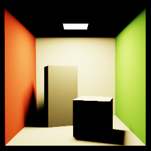
 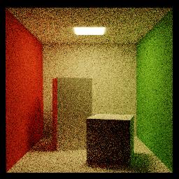
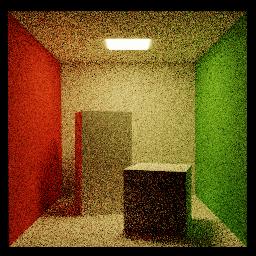
Figure 2: The CornellBox with 1000 spp and uniform hemisphere sampling. (The direct lighting only is brighter due to the tone mapping)
Different Type of Material
The figure below show the rendering of variation of Cornell Boxes with different material. Although the sample per pixel is the same, we can see that the quality of the image differs in each case, this can be resolved to some extend with the importance sampling.
 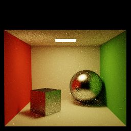
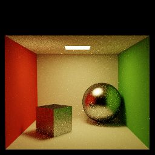
Figure 3: The direct lighting global illumination of diffuse material, mirror material, glossy material, and refraction material. respectively. 1000 spp is used for each image.
Importance Sampling
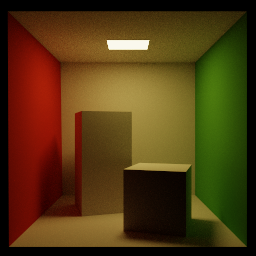
Figure 4: (left) Cornell Box with 1000spp and unifrom sampling. (right)The same scene with the left but with importance sampling.

Figure 5: (left)Glossy-specular Cornell Box with 1000spp and unifrom sampling. (right)The same scene with the left but with importance sampling.
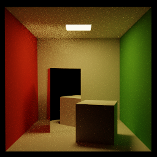

Figure 6: (left) Mirror Cornell Box with 1000spp and unifrom sampling. (right)The same scene with the left but with importance sampling.
 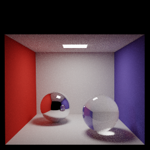
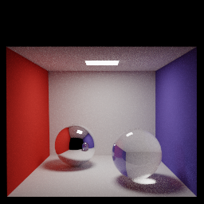
Figure 7: (left) Refractive Cornell Box with 1000spp and unifrom sampling. (right)The same scene with the left but with importance sampling.
Stratified Sampling
(Apparently this doesn't really improve the image quality that much.)
Figure 8: (left)Glossy-specular Cornell Box with 1000spp and importance sampling. (right)The same scene with the left but with stratified sampling with 100 subpixels.
Multiple Importance Sampling
In this case, we consider the combination of the diffuse and specular material. One can see that the noise on
the box is greatly reduced. (This is the same .obj file with CornellBox-Gloosy but taking diffusive
coefficient into the consideration.)
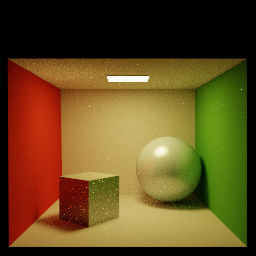 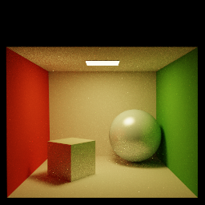
Figure 9: (left)Glossy-specular with diffuse coefficient Cornell Box with 1000spp and importance sampling. (right)The same scene with the left but with multiple importance sampling
Implementation detail:
-
util/helper.cpp: This files contain a helper function.- randomf : random a float between 0-1
- refl : calculate the reflection of the incoming ray over the normal vector
- getNormalCoordinate: calculate the rotation matrix of the vector that rotate unit vector +z to an arbritary vector n. This method choose the other two basis by enforcing that either the x-component or the y-component of the new basis is zero.
-
uniformSampleHemisphere: uniform sampling a point in the surface of the unit hemisphere where the axis of the hemisphere is pointing toward a vector n.
-
cosineSampleHemisphere: Sample the light with cosine probability this is used as an importance sampling for the diffuse material
-
glossySampleHemisphere: importance sampling for the glossy-specular material
- freshel: calculate the transmittion vector and the transmittance of the freshnel material
-
pathtracer.cpp:- traceScene: looping to all pixel and call tracePixel to find the radiance and normalize it with toneMapping before putting the value inside the image
- tracePixel: I implement the stratified sampling where one choose the parameter num_stratified to divide each pixel into num_stratified x num_stratified subpixels. Then, sample N rays from each subpixels randomly. The radiance for each ray is average and return into traceScene.
- traceRay: find the radiance for each ray. The intersected point is calculate and the sampling for rendering equation occurs here. The detail for sample depends on the material.
- toneMap: The tone map is calculated following the method from this paper
- getMaterial: determine the type of the material. Currently, the MIRROR is define as the material has illum between 3 and 8. The Freshnel Material is not supported yet. The Specular material is defined to be the material which is not Mirror/Freshnel and have non-zero specular coefficient. The diffuse material is define as the material which is not the first three which have non-zero diffusion coefficient.
- BRDF: calculate the bdrf of the matrial from the material type, normal vector, incoming and outgoing ray. Note that the MIRROR_MATERIAL have this equals to one by default but it is not actually use as all the mirror reflect identically in our model.
- directLighting: calculate the direct lighting
- traceHelper: calling trace according to the object
- traceMirror, traceRefract, traceMaterial: path tracing for each material
- generateFocalRay: generate ray in such a way that mimic the focal blue effect
- sampleHemisphere : sampling the light ray according to the material
- getAreaLight : get the total Area of the light source and initializing a light sample
- sampleLightArea: sample the light source for direct lighting
- Other Part of the code
- I modify the Mesh object so that it can return all of the triangle light source which I store in the scene class for direct lighting
- I have a function for the triangle to calculate a uniformly random position in the triangle from 2 random number
- I have a function for the triangle to calculate the area of the triangle from its vertices
file and the pathtracer.cpp file. Currently, util/helper.cpp deal with the helper
function that doesn't take in the detail about the path tracing such as the random